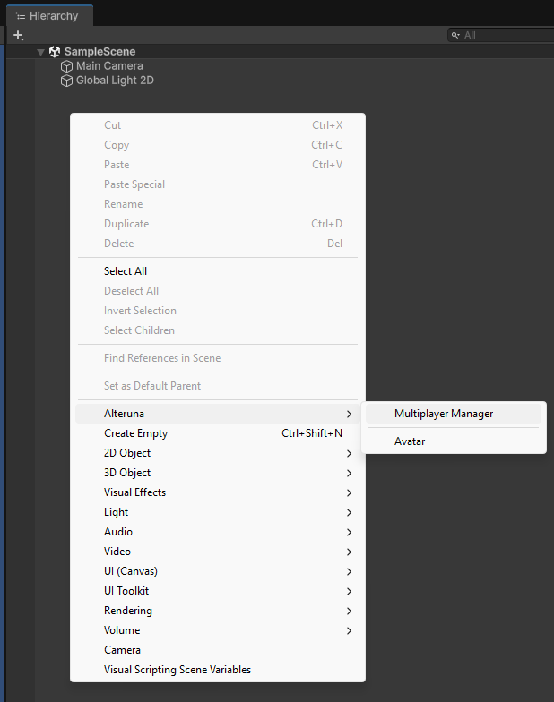
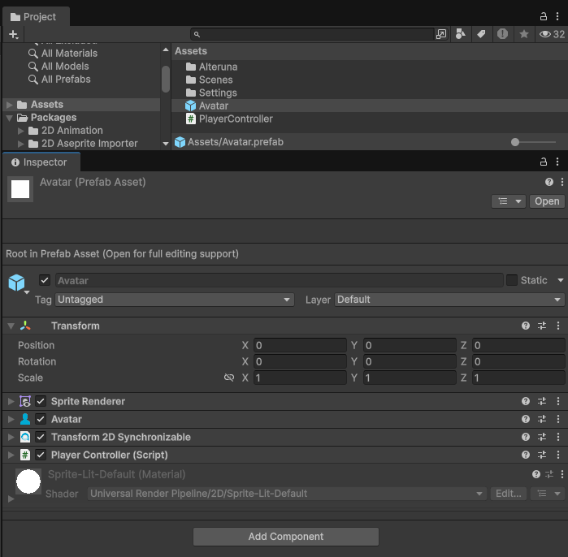
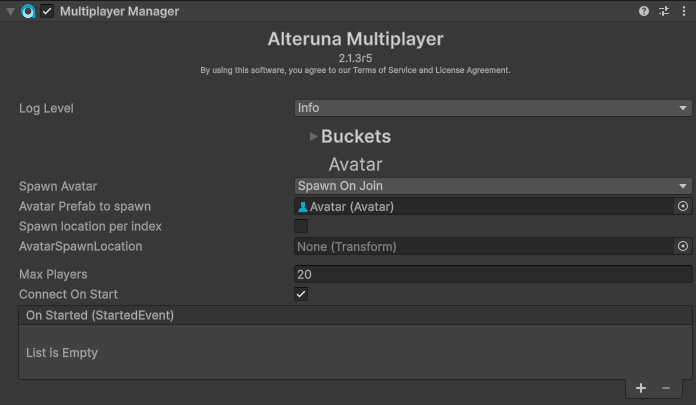
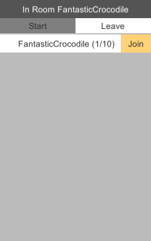

Alteruna Multiplayer Docs
Example
The process of setting up a multiplayer game using Alteruna.
In this part, we will go through how to set up a project with Alteruna, how spawning works,
and how to sync transforms between players.
More information or support, check out the Alteruna Discord server.
Set up the Project
Create a new 2D project in Unity (Unity 2021.3 or later) and add the Alteruna Multiplayer package. (See Get Alteruna Multiplayer Guide for more details)Set up the Multiplayer Component
Lets add a multiplayer manager to our scene.In a new scene, right click in the hierarchy and navigate to
Alteruna → Multiplayer Manager
Registration is optional but without it, you are limited to local hosting.
Create Player Avatar
- Create an object to represent the player. In this example we will make a
2D Object → Sprites → Square. - Add an
Avatarcomponent. - Add a
TransformSynchronizable2Dcomponent.

To control the Player, we need to create a controller component and then add it to our Player object.
In this example we will make a simple version of a player controller which looks like this:
C#
using UnityEngine;
using Alteruna.Multiplayer.Core;
using Alteruna.Multiplayer.Unity;
public class PlayerController : CommunicationBridge
{
public float Speed = 10.0f;
public float RotationSpeed = 180.0f;
public override void Possessed(bool isMe, User user)
{
enabled = isMe;
if (isMe)
{
SpriteRenderer renderer = GetComponent<SpriteRenderer>();
// Set the color sprite representing me to be green
renderer.color = Color.green;
}
}
// Only runs when possessed by local user (isMe == true)
// because of the method above.
void Update()
{
// Get the horizontal and vertical axis.
float _translation = Input.GetAxis("Vertical") * Speed;
float _rotation = -Input.GetAxis("Horizontal") * RotationSpeed;
_translation *= Time.deltaTime;
_rotation *= Time.deltaTime;
transform.Translate(0, _translation, 0, Space.Self);
transform.Rotate(0, 0, _rotation);
}
}Spawn Player Avatar when joining a Room
To use the newly created Player object in our game, we must first save it as a prefab.Once we have a player prefab, we can hook it up to the Multiplayer Component to be automatically
spawned when we or someone else joins the Room.
First, in the Multiplayer Component, change the
Spawn Avatar dropdown value to Spawn On Join.This will open up more options. Put the Player prefab that we made earlier in the
Avatar Prefab to spawn property.
Now, when we or someone else joins a Room, an instance of the Player prefab will be spawned and only accept
input from the User it represents!
Test the game!
To test that our game works, add theRoomMenu prefab into the scene so that we can join a room easily.The prefab is located in
Alteruna Multiplayer SDK → Prefabs → RoomMenu
Then, build and run the game! Now, if we start the game and join the same Room on two instances at the same time,
we should see two of our Player objects but only be able to control the green one!
It should look something like this:

← Back | Next →